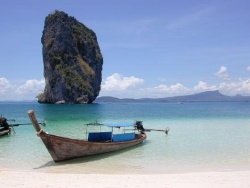

Thailand
From Rashed Karim Wiki
Top sites
- Wikitravel sites are always the best, here is the one for Phuket. No commercial rubbish just plain and honest comments and advice about the place.
Places to see
  Krabi - popular destination for scuba diving and other water activities.
Krabi - popular destination for scuba diving and other water activities.
- Krabi
- Koh Tao - much quieter than Phuket and Koh Samui (island recommended by Fouz husband)
Places to stay
Things to do
- Snuba diving is apparently becoming popular amongst tourists who don't hold a certification.
- Snuba diving tours to Phi phi here. The site was listed on this site
- What marine animals to avoid while snorkeling or scuba diving here
Private speed-boat charter
- A full day-long trip (approx. 8 hrs) starting at 9am to 5pm trip on private speedboat to Phi phi from phuket: total comes to around 400 pounds. See here: here
Beware
- Be careful about jet-ski scam here and here and here is how thailand is approaching to solve this problem here
- A website listing scams reported by visitors but seems to be in-active now here
Eating
Visa matters
- Bangladeshi passport holders required to apply at the royal thai embassy in london here
Weather
- A good 10-day weather prediction for Bang tao here
- There can't be a better description of the weather in phuket, the good and bad of each month here in this article.
Car hire
- Someone on Tripadvisor recommended this private hire - car and a local driver suggesting that it is a very good way of exploring the island.

{kind=link}